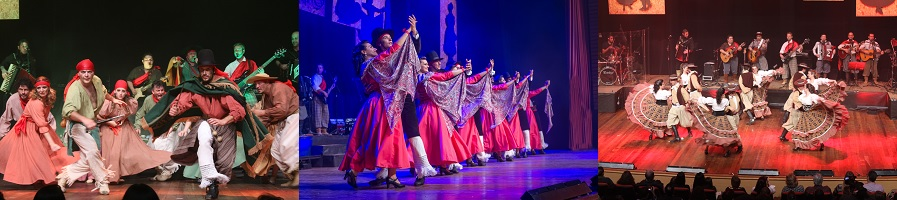
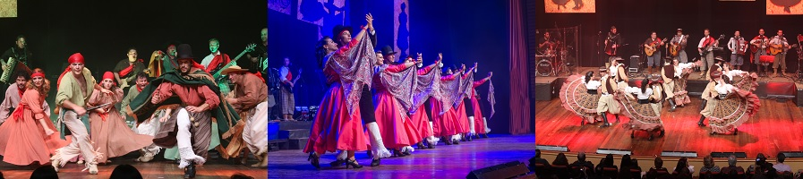

Dia 12/07 (Quinta-Feira)
Palestra Emídio Luisi - Itália Mia, 30 anos de fotografias capturadas em visitas do autor à terra natal
Lançamento do Livro "Itália Mia"
19:00h - Centro Universitário da Serra Gaúcha – FSG
Lançamento do Livro "Itália Mia"
19:00h - Centro Universitário da Serra Gaúcha – FSG
Palestra Evandro Teixeira - A Fotografia no Contexto da História
19:40h - Centro Universitário da Serra Gaúcha – FSG
19:40h - Centro Universitário da Serra Gaúcha – FSG
Palestra Valdemir Cunha - Produção de Livros Fotográficos
20:20h - Centro Universitário da Serra Gaúcha – FSG
20:20h - Centro Universitário da Serra Gaúcha – FSG
Dia 14/07 (Sábado)
Passeio Fotográfico - Interior da Colônia Italiana
14:30h - Sede CFCX
Exclusivo para fotoclubistas
14:30h - Sede CFCX
Exclusivo para fotoclubistas
Dia 15/07 (Domingo)
Passeio Fotográfico - Pontos Turísticos de Caxias do Sul
9:00h - Sede do CFCX
Exclusivo para fotoclubistas
9:00h - Sede do CFCX
Exclusivo para fotoclubistas
Dia 04/08 (Sábado)
Saída Fotográfica: Passeio Por Vila Italiana, origem da indústria da região
8:30h - Swan Hotéis
Exclusivo para fotoclubistas
8:30h - Swan Hotéis
Exclusivo para fotoclubistas
Visitação à Vinícola Don Bonifácio
14:30h - Em frente ao Posto Petrobrás (Esquina Rua 13 de Maio com Rua Os 18 do Forte)
Exclusivo para fotoclubistas
14:30h - Em frente ao Posto Petrobrás (Esquina Rua 13 de Maio com Rua Os 18 do Forte)
Exclusivo para fotoclubistas
Assembléia CONFOTO
17:00h - Swan Hotéis
17:00h - Swan Hotéis
Cerimônia de Premiação
19:30h - Casa de Cultura Percy Vargas de Abreu e Lima Apresentação artística da cultura regional com o grupo Os Gaudérios. 
19:30h - Casa de Cultura Percy Vargas de Abreu e Lima Apresentação artística da cultura regional com o grupo Os Gaudérios. 
Abertura da Exposição
21:00h - Casa de Cultura Percy Vargas de Abreu e Lima
21:00h - Casa de Cultura Percy Vargas de Abreu e Lima
Dia 05/08 (Domingo)
Passeio fotográfico à Igreja de San Pelegrino e ao Complexo Moinho da Estação
9:00h - Sede CFCX
Exclusivo para fotoclubistas
9:00h - Sede CFCX
Exclusivo para fotoclubistas
IMPORTANTE
Clique no botão "Inscreva-se" para garantir seu acesso aos eventos da Bienal